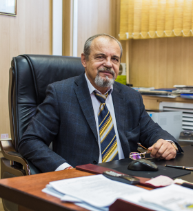
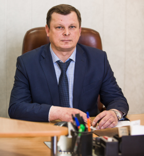

Руководство

Дедюхин Александр Владимирович
Генеральный директор АО «ЯЭРК»
Образование
На Якутской ГРЭС специалисты ЯЭРК продолжают капитальный ремонт ГТУ-7, включающий в себя, в том числе, восстановление рабочих и направляющих лопаток турбины, отработавших свой ресурс. «После выработки основного ресурса лопатки могут быть восстановлены дважды, что значительно продлевает ресурс турбины и экономит средства на изготовление новых», - рассказал главный инженер АО «ЯЭРК» Леонид Головченко. После окончания работ на ГТУ-7 в плановый ремонт до октября будет выведена ГТУ-2.
Карьера
На Якутской ГРЭС специалисты ЯЭРК продолжают капитальный ремонт ГТУ-7, включающий в себя, в том числе, восстановление рабочих и направляющих лопаток турбины, отработавших свой ресурс. «После выработки основного ресурса лопатки могут быть восстановлены дважды, что значительно продлевает ресурс турбины и экономит средства на изготовление новых», - рассказал главный инженер АО «ЯЭРК» Леонид Головченко. После окончания работ на ГТУ-7 в плановый ремонт до октября будет выведена ГТУ-2.

Леонид Головченко
Главный инженер АО «ЯЭРК»
Образование
На Якутской ГРЭС специалисты ЯЭРК продолжают капитальный ремонт ГТУ-7, включающий в себя, в том числе, восстановление рабочих и направляющих лопаток турбины, отработавших свой ресурс. «После выработки основного ресурса лопатки могут быть восстановлены дважды, что значительно продлевает ресурс турбины и экономит средства на изготовление новых», - рассказал главный инженер АО «ЯЭРК» Леонид Головченко. После окончания работ на ГТУ-7 в плановый ремонт до октября будет выведена ГТУ-2.
Карьера
На Якутской ГРЭС специалисты ЯЭРК продолжают капитальный ремонт ГТУ-7, включающий в себя, в том числе, восстановление рабочих и направляющих лопаток турбины, отработавших свой ресурс. «После выработки основного ресурса лопатки могут быть восстановлены дважды, что значительно продлевает ресурс турбины и экономит средства на изготовление новых», - рассказал главный инженер АО «ЯЭРК» Леонид Головченко. После окончания работ на ГТУ-7 в плановый ремонт до октября будет выведена ГТУ-2.